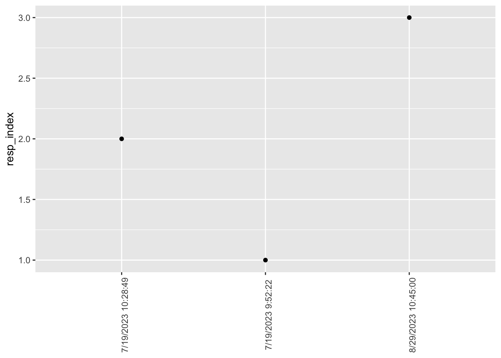

if (!dir.exists('csv')) {
message("Creating missing `csv/`.")
dir.create("csv")
}
options(gargle_oauth_email = Sys.getenv("GMAIL_SURVEY"))
googledrive::drive_auth()
googledrive::drive_download("Scientific Values Survey (Responses)", path = "csv/survey-02-sci-values.csv", type = "csv", overwrite = TRUE)Survey 02
Purpose
This page documents the data processing steps involved with Survey 02 in PSYCH 490.009.
The survey questions were adapted from those discussed in (Kardash & Edwards, 2012).
Survey
Preparation
First, we load the external packages (groups of R commands) that we will be using.
Gathering
Next, we download the data from the Google Sheet where it is collected. Dr. Gilmore has stored his Google account credentials in a special environment file that can be accessed by the R command Sys.getenv("GMAIL_SURVEY").
The data file has been saved as a comma-separated value (CSV) format data file in a special directory called csv/.
Note
Because these data might contain sensitive or identifiable information, we only keep a local copy and do not share it publicly via GitHub. This is achieved by adding the name of the data directory to a special .gitignore file.
Cleaning
Next we load the data file and clean it.
survey_02_norms <-
readr::read_csv("csv/survey-02-sci-values.csv", show_col_types = FALSE)
# Google Forms puts the full question in the top row of the data file.
# We use the names() function to extract and print the original questions.
survey_02_norms_qs <- names(survey_02_norms)
survey_02_norms_qs [1] "Timestamp"
[2] "Scientists are generally motivated by the desire for knowledge and discovery, and not by the possibility of personal gain....2"
[3] "Scientists make an attempt to consider all new evidence, hypotheses, theories, and innovations, even those that challenge or contradict their own work....3"
[4] "Scientists generally assess new knowledge and its applications based on the reputation and past productivity of the individual or research group....4"
[5] "Scientists openly share new findings with all colleagues....5"
[6] "Scientists generally invest their careers in promoting their own most important findings, theories, or innovations....6"
[7] "Scientists compete with others in the same field for funding and recognition of their achievements....7"
[8] "Scientists generally evaluate research only on its merit (i.e., according to accepted standards of the field)....8"
[9] "Scientists emphasize the protection of their newest findings to ensure priority in publishing, patenting, or applications....9"
[10] "Scientists are generally motivated by the desire for knowledge and discovery, and not by the possibility of personal gain....10"
[11] "Scientists make an attempt to consider all new evidence, hypotheses, theories, and innovations, even those that challenge or contradict their own work....11"
[12] "Scientists generally assess new knowledge and its applications based on the reputation and past productivity of the individual or research group....12"
[13] "Scientists openly share new findings with all colleagues....13"
[14] "Scientists generally invest their careers in promoting their own most important findings, theories, or innovations....14"
[15] "Scientists compete with others in the same field for funding and recognition of their achievements....15"
[16] "Scientists generally evaluate research only on its merit (i.e., according to accepted standards of the field)....16"
[17] "Scientists emphasize the protection of their newest findings to ensure priority in publishing, patenting, or applications....17"
[18] "If you wish to comment about the questions in this survey, you may do so here. You are not required to comment." Filtering out irrelevant responses
We should omit the first two response in the dataset. These were used by Dr. Gilmore used to generate a Google Sheet, and aren’t real data.
survey_02_norms <- survey_02_norms |>
dplyr::filter(comments != "test")Clean/shorten names
For plotting and analyses, it’s usually easier to shorten the questions by creating a short name that reflects the underlying idea or construct. We’ll use the rename() function from the dplyr package for this.
new_names <-
c(
"timestamp",
"Disinterestedness_should",
"Organized Skepticism_should",
"Particularism_should",
"Communality_should",
"Organized Dogmatism_should",
"Self-interestedness_should",
"Universalism_should",
"Solitariness_should",
"Disinterestedness_actually",
"Organized Skepticism_actually",
"Particularism_actually",
"Communality_actually",
"Organized Dogmatism_actually",
"Self-interestedness_actually",
"Universalism_actually",
"Solitariness_actually",
"comments"
)
# These data are ‘wide’, meaning that there are multiple variables for each respondent. The data will be easier to visualize and analyze if we make the data ‘longer’.
# Swap out old (long) names for new (short) names
long_names <- names(survey_02_norms)
names(survey_02_norms) <- new_names
survey_02_norms_long <- survey_02_norms |>
tidyr::pivot_longer(!c('timestamp', 'comments'),
names_to = "norm_counternorm",
values_to = "rating")
# We move the '_should' and '_actually' to a separate variable called 'resp_frame'
survey_02_norms_long <- survey_02_norms_long |>
dplyr::mutate(resp_frame = stringr::str_extract(norm_counternorm, "should|actually")) |>
dplyr::mutate(norm_counternorm = stringr::str_remove_all(norm_counternorm, "_[a-z]+"))
# We should indicate whether these are norms or counternorms.
survey_02_norms_long <- survey_02_norms_long |>
dplyr::mutate(type = if_else(
norm_counternorm %in% c(
"Disinterestedness",
"Organized Skepticism",
"Communality",
"Universalism"
),
"norm",
"counternorm"
)) Now, let’s look at the names to confirm that they all got changed.
names(survey_02_norms_long)[1] "timestamp" "comments" "norm_counternorm" "rating"
[5] "resp_frame" "type" Data dictionary
We’ll pause here to start building a data dictionary, a file that explains the origin, format, and usage of our dataset.
# Make new data frame with long and short names for reference
survey_02_norms_data_dictionary <-
tibble::tibble(q_long = long_names, q_short = new_names)
survey_02_norms_data_dictionary <- survey_02_norms_data_dictionary |>
dplyr::mutate(norm_type = if_else(
stringr::str_detect(
q_short,
"Disinterestedness|Skepticism|Communality|Universalism"),
"norm",
"counternorm"
)) |>
dplyr::mutate(resp_frame = if_else(
stringr::str_detect(
q_short,
"should"),
"should_do",
"actually_do"
))
# The `norm_type` and `resp_frame` variables have no meaning for the timestamp or comments.
survey_02_norms_data_dictionary$norm_type[1] <- NA
survey_02_norms_data_dictionary$norm_type[18] <- NA
survey_02_norms_data_dictionary$resp_frame [1] <- NA
survey_02_norms_data_dictionary$resp_frame [18] <- NAWe’ll add other items to the data dictionary later.
Visualizations
n_responses <- dim(survey_02_norms)[1] # number of rows in original
survey_02_norms |>
dplyr::mutate(resp_index = 1:(n_responses-1)) |>
ggplot() +
aes(x = timestamp, resp_index) +
geom_point()
References
Kardash, C. M., & Edwards, O. V. (2012). Thinking and behaving like scientists: Perceptions of undergraduate science interns and their faculty mentors. Instructional Science, 40(6), 875–899. https://doi.org/10.1007/s11251-011-9195-0